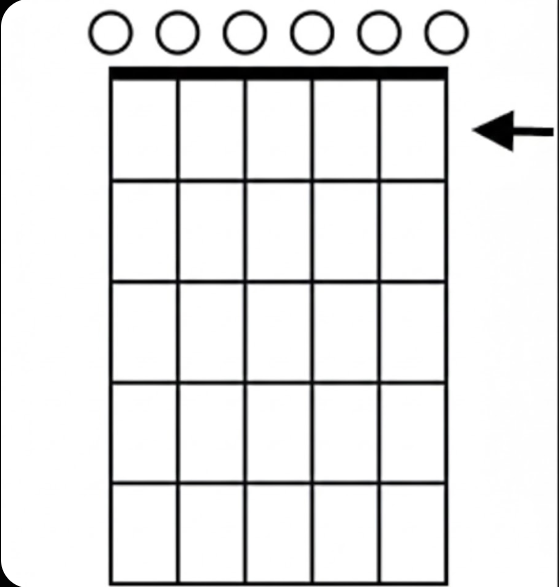
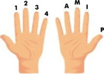
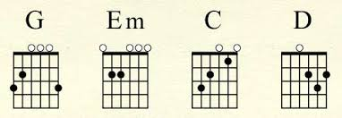

Aqui vamos começar por aprender a tocar os acordes da musica "Dunas" dos GNR
Ela usa apenas 4 acordes sendo eles: Sol, Mí Maior, Dó e Ré
Antes de algo, vamos aprender a ler a "tablatura com acordes"
deixo em negrito e sublinhado porque iremos aprender "tablaturas de dedilhado"

Vamos começar pelas casas, cada linha de quadrados (seta) é equivalente a 1 casa.Cada linha na horizontal é equivalente a uma corda.As linhas são contadas de cima para baixo e da direita para a esquerdaOs circulos que estão na parte de cima são as cordas que temos de tocar,
se tiver os circulos todos, tocamos, caso tenha um X, não se toca a corda.
Agora vamos passar para o posicionamento dos dedos!

Para começar, temos de entender as mãos.A mão esquerda fica no braço para mudar as cordas que vamos apertar.A mão direita fica no corpo para tocar as cordas.Os dedos da mão esquerda são:
Indicador = dedo 1
Médio = dedo 2
Anelar = dedo 3
Mindinho = dedo 4
(OBS: O polegar da mão esquerda so é utilizado para abafar as cordas e deve sempre ser movimentado juntamente com a mão)
Agora que ja aprendeste o posicionamento dos dedos, vamos começar!
Vamos fazer a seguinte sequencia para baixo com o polegar da mão direita: G, Em, C e o D

Agora com a mão esquerda metemos:
Para o acorde de G
Dedo 1 na Casa 2 Corda 6
Dedo 2 na Casa 3 Corda 5
Dedo 3 na Casa 3 Corda 1
Para o acorde de Em
Dedo 1 na Casa 2 Corda 5
Dedo 2 na Casa 2 Corda 4
Para o acorde de C
Dedo 1 na Casa 1 Corda 2
Dedo 2 na Casa 2 Corda 4
Dedo 3 na Casa 3 Corda 5
(OBS: Não se toca a 6ª corda)
Para o acorde de D
Dedo 1 na Casa 2 Corda 3
Dedo 2 na Casa 2 Corda 1
Dedo 3 na Casa 3 Corda 2
(OBS: Não se toca a 5ª e 6ª)
Se ja te sentes capaz de fazer estes acordes, vamos passar para os ritmos e depois disso, vamos aprender a tocar a nossa primeira musica!